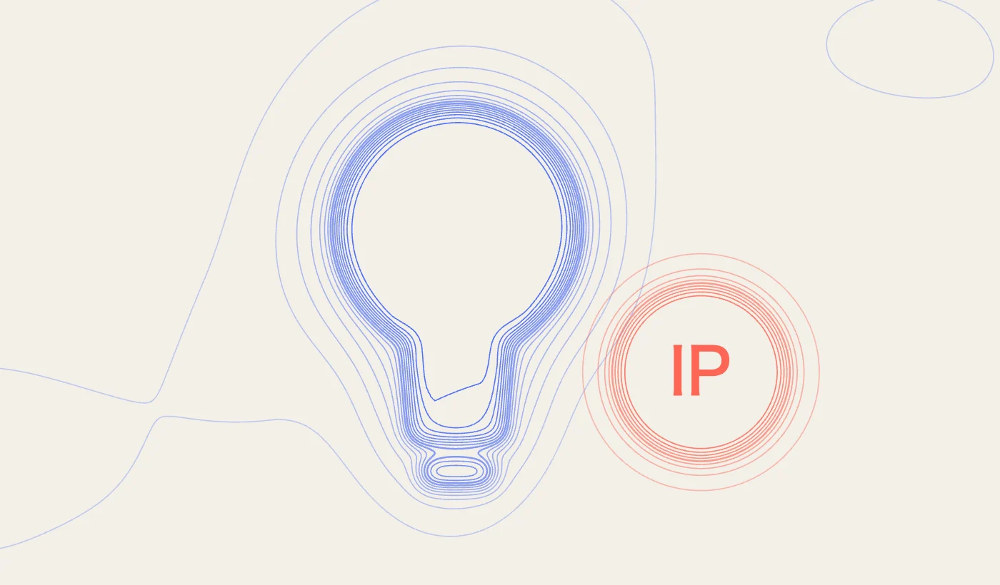
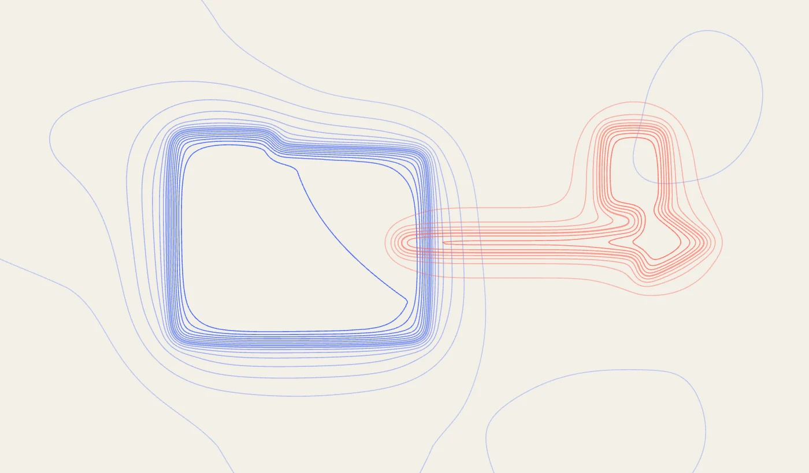
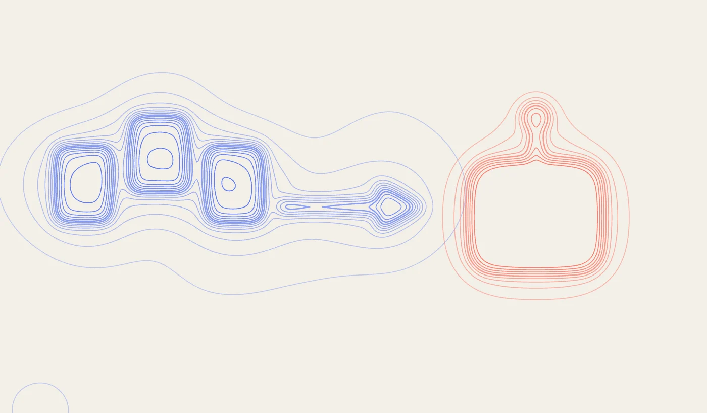
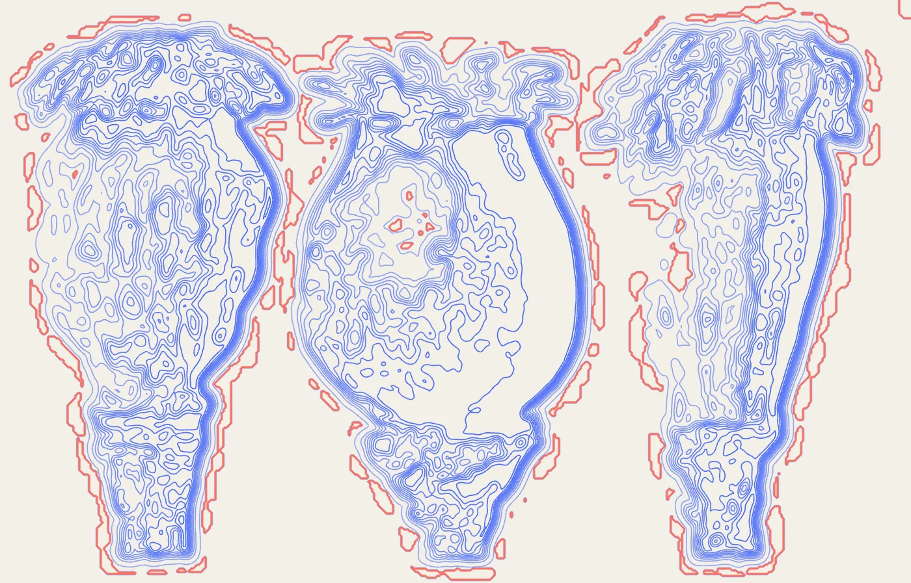

In this three-part series, koralli unravels the complex relationship between artificial intelligence (AI) and intellectual property (IP), exploring what it means for you and your business. We’ll guide you through the various intersections between these two resource domains, building a comprehensive understanding of the challenges and opportunities that lie ahead. By the end, you'll be equipped with six actionable strategies to minimise risks associated with Generative AI and optimise your IP assets in this rapidly evolving landscape.
The first article, Artificial Intelligence & Intellectual Property, offers a concise introduction to IP—what it is, how to leverage it effectively , and its relevance to a comprehensive AI strategy. It also delves into the various applications of AI and considers how these technologies interact with and rely on IP.
The second article, How are IP Protections Changing in a Global AI Landscape?, examines the global trends driving change in this field. We explore the ongoing geopolitical struggle over AI legislation, which seeks to balance the need for greater regulation against the push for innovation. What do these shifts mean for your business? How will emerging legal challenges shape the trajectory of the IP-business model in the Generative-AI era? And where are IP protections most vulnerable? We identify six key areas where IP safeguards are currently lacking in both national and international laws and offer guidance on how to avoid inadvertently infringing on others’ rights while using AI.
Concluding the series is our article Proactive Strategies to Maximise the AI-IP Intersect, where we address the impact of Generative AI on IP protection and present six foundational steps you can take to safeguard your business. These strategies are designed to help you navigate the complexities of the AI-IP landscape, ensuring you can protect your intellectual property while leveraging AI’s potential.
Artificial Intelligence & Intellectual Property
To begin our exploration, it's essential to understand the foundational concepts that connect AI and IP.

Photo by Thomas Balabaod from Pexels
Intellectual Property Explainer
Intellectual Property (IP) serves as the backbone of innovation, providing the legal framework that protects human-made intangible creations, or assets. These assets include ideas, inventions, logos, stories, brand names, and the like. Closely tied to this is the concept of intellectual property rights (IPR), designed to safeguard creators from the unauthorised use of their works. These protections are crucial for establishing competitive advantage, generating licensing revenue, fostering long-term growth, and attracting investment (Sweetenham 2023).
The IP-Businesses Model and Vulnerable Sectors
Adopting an IP-centric business model involves strategically leveraging intellectual property assets to drive growth and maintain competitive advantage. Industries heavily reliant on these assets, such as the creative sectors, pharmaceuticals, and industrial manufacturing, are particularly vulnerable to IP theft. For these sectors then, the question of IP protection looms large. A closer examination of the pharmaceutical industry, with Pfzier as the case study (US Pharmaceutical industry company), reveals the risks companies face managing their IP.

In 2022, Pfizer took legal action against a former employee, Chun Xiao Li, for alleged stealing more than 12,000 confidential documents. Their federal court complaint detailed sensitive information - relating to development of the COVID-19 vaccine - was contained in the stolen files (Amari 2023). This incident underscores the inherent vulnerabilities faced by research-intensive businesses, even before considering the added complexities brought by AI. The vulnerability should serve as a warning to other IP-dependent sectors about the critical importance of robust IP protection.
How IP-Protections Facilitate Commercial Advantages
Integrating IP protections into a business model goes beyond the legal defence; its a strategy for actively leveraging these assets to unlock new revenue streams, drive innovation, and strengthen market reputation. Businesses that recognise the intrinsic value of their IP are better positioned to maximise their investments, negotiate advantageous licensing deals, and forge strategic partnerships.
Vigilance in protecting IP is not merely a defensive manoeuvre but a proactive measure that can significantly enhance profitability and ensure long term sustainability.
Five Key Protections to Maximise IP Asset Potential:
1. Patents
A patent is a legal right granted to an inventor, giving them the exclusive authority to make, use, or sell their invention for a certain period. By securing patents, companies protect their innovations, ensuring they retain the exclusive right to manufacture and sell their products, or licence the technology for a fee. .
2. Trademarks
A trademark is a symbol, word, or phrase legally registered to represent a company or product. Trademarks safeguard the unique identity of a business, enabling consumers to distinguish their products or services from those of competitors. These include your business’ distinguishing markers, such as distinctive signs, logos, and names.
3. Copyright
Copyright is a legal protection granted to the creators of original works, covering literary, artistic, musical, and other creative content. Copyrights are vital for the creative and entertainment sectors, as they protect original works from unauthorised reproduction, thus encouraging ongoing creativity and production.
4. Trade Secrets
Trade secrets refer to valuable, confidential business information that provides a company with a competitive edge. This includes non-public intellectual property data—such as customer lists, proprietary algorithms, formulas, and processes that—when kept secret, help maintain a company's market position.
5. Digital assets
Digital assets encompass any content stored digitally, such as proprietary code, unique algorithms, and digital files like images, videos, or documents. The growing recognition of digital assets as forms of intellectual property highlights their increasing importance in today’s economy. This category also includes emerging technologies like the increasingly popular non-fungible tokens (NFTs), which have become critical assets in the digital landscape (Thomas 2023).
Integrating intellectual property (IP) into your business model provides a robust framework for generating value and maintaining a competitive advantage. The strategic use of IP assets is critical for businesses, particularly in industries where innovation and branding are key to market dominance. However, with the advent of Generative artificial intelligence (GIA), these traditional steps are no longer sufficient to fully protect your IP assets.
How Artificial Intelligence & Intellectual Property Intersect

Photo by Tara Winstead from Pexel
To understand how AI applications and development connect to IP assets—and the measures businesses should take in response, as discussed in article two and three—we first need to outline the fundamentals of AI training, generation, and services.
AI Models: the basics
In simple terms, there are three AI models that are important to understand as an IP rightsholder:
Machine Learning (ML)
Platform examples: Amazon SageMaker, Google Cloud, Microsoft Azure
1. A subset of AI focused on training models using labelled datasets.
2. Utilises statistical techniques and neural networks to identify patterns—essentially ‘learning’ from data.
3. Makes predictions or decisions without being explicitly programmed to perform the specific task (Toloka 2023).
Goal: To classify data and make predictions on new, unseen data. .
Generative AI (GAI)
Platform examples: Stable Diffusion, Midjourney, DALL-E 2
1. A broad category of AI that focuses on generating various forms of content.
2. Trained using ML algorithms, neural networks, and large datasets to recognise patterns (Toloka 2023).
3. Capable of creating new, original content such as images, text, audio, and visual media.
Goal: To create new examples of data.
Large Language Models (LLM)
Platform examples: Open AI’s GPT-4, Google’s GLaM, and Meta’s LLaMA
1) A specific type of GAI designed for advanced text-based tasks.
2) Trained on vast datasets to learn language patterns, semantics, grammar, and context.
3) Capable of generating human-like language, translation, and even code creation.
Goal: Advanced text generation and completion of language tasks.
There are many other AI-related terms—such as Natural Language Processing (NLP), Deep Learning (DL), Computer Vision, and Explainable AI—each with its own applications and training systems. However, for our purposes, the three models listed above are the most relevant when considering the challenges AI poses to IP rights. These challenges primarily stem from their training methods, which often involve Text and Data Mining (TDM) (Overby 2020).
Uses of GAI
The creative potential of GAI tools is monumental, marking a new era for industries such as pharmaceuticals, art, music and beyond. By inputting a simple prompt into a platform like DALL·E 2, users can produce extraordinary images in styles spanning the artistic cannon—from impressionist watercolours to cubist oil paintings to photorealistic pencil drawings.
The budding possibilities are so expansive that the New York Museum of Modern Art recently hosted a near year-long installation featuring exclusively AI-generated artwork. Unsupervised, by artist Refik Anadol (Nov. 2022 - Oct 2023), was the result of an AI model that, having mined and analysed MOMA’s entire collection, transformed 200 years of art history into an entirely new AI-generated installation (Anadol 2022).
For text generation, it is commonplace for free GAI platforms—such as GPT-3, Google Bard, or Claude AI—to produce top grade A-level essays, poems and pressés. In business applications, the productivity-boosting potential is tremendous. Even basic GAI algorithms can slash time spent on routine tasks like minute-taking, drafting emails, or scheduling meetings. These possibilities, along with practical strategies, will be explored further in Proactive Strategies to Maximise the AI-IP Intersect [3/3].
Photo by Google DeepMind from Pexel
How AI Intersects with IP
These remarkable advances in Generative AI (GAI) require some unpacking, particularly in understanding how GAI models are trained.
In large part, training data is sourced and ingested directly from the internet in a process called ‘Text and Data Mining’ (TDM). And, more often than not, without copyright permission. This practice, known as ‘scraping’, creates datasets with vast arrays of content that include everything from articles, photos, drawings, books, and surveys, to nearly anything else one can find through a Google search. Take Chat-GPT3 for instance, whose LLM was trained using this ‘scraping’ method, which ingested massive amounts of data such as Wikipedia’s entire library, Reddit threads, and even blog posts (Merkley 2023).
Image-generating GAI algorithms follow a similar approach. The most notable and widely used dataset for these models is the LAION-5b catalogue, used for instance to train Stable Diffusion’s model (Beaumont 2022). This dataset contains approximately six billion ‘tagged’ images that were indiscriminately scraped from the web.
Very quickly, the colossal scale of ongoing and unchecked IP infringement arising from these practices becomes apparent.
Why is Strong AI-IP Regulation Important?
The scraping of data may feel like a remote issue for businesses using GAI platforms for routine tasks like creating email templates. However, the same models performing these seemingly prosaic tasks may expose you to significant risks, potentially infringing on a broad range of sectors and intellectual property rights (IPRs) held by entities reliant on an IP-centric business model.
IP-based business models represent a substantial portion of the UK’s economic productivity. For example, the creative industries contribute £108 billion annually to the UK’s Gross Value Added (GVA), employ 2.3 million, and have grown at 1.5 times the rate of the UK economy over the last decade. The term ‘creative industry’ extends far beyond the arts, publishing, or music; in fact, in the UK the division’s largest segments within this division are IT, Software, and Computer Services. This sector also plays a critical role in the UK’s global exports, ranking as the 5th largest exporter of creative services (valued at $57 billion annually) and the 7th largest exporter of creative goods ($15 billion annually) (Department of Culture, Media, & Sport 2023). Given these figures, it is clear intellectual properly (IP) is a highly valuable asset, and understanding the associated risks and vulnerabilities is crucial.

For the many UK producers and exporters of IP and IPRs, the current trajectory of AI regulation—favouring a voluntary system—falls short of providing adequate protection for copyrights and IP licences. The UK’s historic ‘gold standard’ credentials, dating back to the Statute of Anne (1709), now faces a turbulent challenge to adapt to the new business models posed by AI (UK Copyright Service, n.d.).
As we dive further into this topic, koralli’s next article will explore the proactive strategies that will safeguard your business in this evolving landscape.
Links to articles 2 and 3 in the series:
Sources [Accessed August 12, 2024]:
Anadol, Refik. 2022. “Refik Anadol on AI, Algorithms, and the Machine as Witness.” MoMA. https://www.moma.org/magazine/articles/821.
Department of Culture, Media, & Sport. 2023. “Creative Industries Sector Vision: A joint plan to drive growth, build talent and develop skills.” GOV.UK. https://assets.publishing.service.gov.uk/media/64898de2b32b9e000ca96712/Creative_Industries_Sector_Vision__accessible_version_.pdf.
Thomas, Kaleigh. 2023. “Everything you need to know about intellectual property.” Superscript. https://gosuperscript.com/news-and-resources/everything-you-need-to-know-about-intellectual-property/.
Beaumont, Romain. 2022. “LAION-5B: A NEW ERA OF OPEN LARGE-SCALE MULTI-MODAL DATASETS.” LAION. https://laion.ai/blog/laion-5b/.
Sweetenham, Ellie. 2023. “Intellectual Property for Start-ups: Key Considerations and Strategies for Early-Stage Businesses.” Lawdit Solicitors.
https://lawdit.co.uk/readingroom/intellectual-property-for-start-ups.
Amari, michael. 2023. “What Is Intellectual Property Theft, and How Can Manufacturers Prevent It?” ABI Research. https://www.abiresearch.com/blogs/2023/03/14/what-is-intellectual-property-theft-and-how-to-prevent-it/.
Overby, Stephanie. 2020. “5 artificial intelligence (AI) types, defined.” The Enterprisers Project. https://enterprisersproject.com/article/2020/5/5-artificial-intelligence-ai-types-defined.
Toloka. 2023. “Difference between AI, ML, LLM, and Generative AI.” Toloka. https://toloka.ai/blog/difference-between-ai-ml-llm-and-generative-ai/.
UK Copyright Service. n.d. “History of copyright: The UK Copyright Service.” UK Copyright Service.